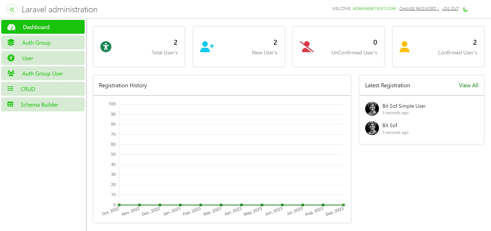

About Laravel Administration
Laravel Administration library provides the facility to developer to create only model. Then if developer use the
LaravelAdmin Trait in that model then, he/she not need to perform the crud operations like create routes, views and
controller logics. Laravel administration will provide autometically crud operations, you can check from your interface
by requesting the URL app-base-url/admin.
If developer use the LaravelAdminAPI trait in model. Then laravel administration package will provide the all apis for
crud, developer not need to perform create, read, list and delete apis for that model. Developer only need to get the
model id and set that model ID into Postman attached collection and test the all apis after authentication.
Installation Guide
You can install by performing these following steps:
- Create Laravel Project - composer create-project laravel/laravel LaravelAdministration
- Install LaravelAdministration Package - composer require bitsoftsol/laravel-administration
- Add this line inside providers array within app.php -
Bitsoftsol\LaravelAdministration\LaravelAdminServiceProvider::class
- Run Command and Select LaravelAdminServiceProvider - php artisan vendor:publish
- Run Commands - npm install, npm run dev
- Set your database name in .env
- Run Command - php artisan migrate --seed
- Add this line inside web.php - Auth::routes();
- Serve Project - php artisan serve
- Access the url (host)/admin/ like http://127.0.0.1:8000/admin
- Login with credentials : Username : admin@bitsoftsol.com, Password : bitsoftsol123
- If you log in and access laravel administration dashboard then,
- Congratulations! You have successfully installed laravel administration.
Usage Guide
We will create CRUD of Seller in these following steps:
- Run command - php artisan make:model Seller -m
-
Inside the seller migration file define seller table fields like name, email, city, country,
profile_image
-
Add LaravelAdmin and LaravelAdminAPI traits
- Import LaravelAdmin Trait on top of seller model class - use use
Bitsoftsol\LaravelAdministration\Traits\LaravelAdmin;
- Import LaravelAdminAPI Trait on top of seller model class - use use
Bitsoftsol\LaravelAdministration\Traits\LaravelAdminAPI;
-
Add these two lines inside Seller model class
use LaravelAdmin;
use LaravelAdminAPI;
-
Add field names in the fillable array inside Seller model class like - protected
$fillable = [ "name",
"email",
"city", "country", "profile_image" ];
-
Run command - php artisan migrate Our sellers table created successfully in database.
-
We visit the (host)/admin/ like http://127.0.0.1:8000/admin/crud
-
If you can view Sellers in CRUD listing view then click on it.
-
Congratulations! You can perform CRUD operations of Seller without any coding.
-
Seller CRUD APIs - Postman Guide
-
Copy and import collection in postman Postman Collection - Laravel
Administration
-
Copy and import environment variables in postman Postman Environment -
Laravel Administration
-
host is (host) like http://127.0.0.1:8000
-
Login API - (host)/api/admin like http://127.0.0.1:8000/api/admin/login
-
Login credentials - Username = admin@bitsoft.com , Password = bitsoft123
-
token - After getting token through login set into (token) environment variable.
-
Get the Seller model_id from this API {{host}}/api/admin/crud/models and set into (model_id)
variable.
-
Now you can access CRUD APIs for Seller Model.
-
Listing of Seller API - {{host}}/api/admin/crud/{{model_id}}
-
Detail of Seller API - {{host}}/api/admin/crud/{{model_id}}/2 , 2 represents the seller detail of id = 2
-
Store Seller API - {{host}}/api/admin/crud/{{model_id}}
-
Update Seller API - {{host}}/api/admin/crud/{{model_id}} , To update seller pass (id) of seller in
form-data inside body tab on postman.
-
Delete Seller API - {{host}}/api/admin/crud/{{model_id}}/3 , 2 represents the seller detail of id = 2
-
Congratulations! We have all APIs to perform crud operations of Seller without any coding.
The Laravel Administration is open-sourced software licensed under the [MIT
license](https://opensource.org/licenses/MIT).